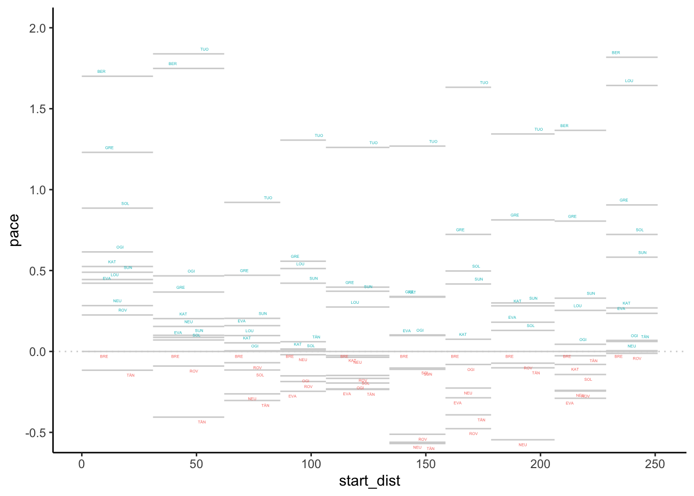
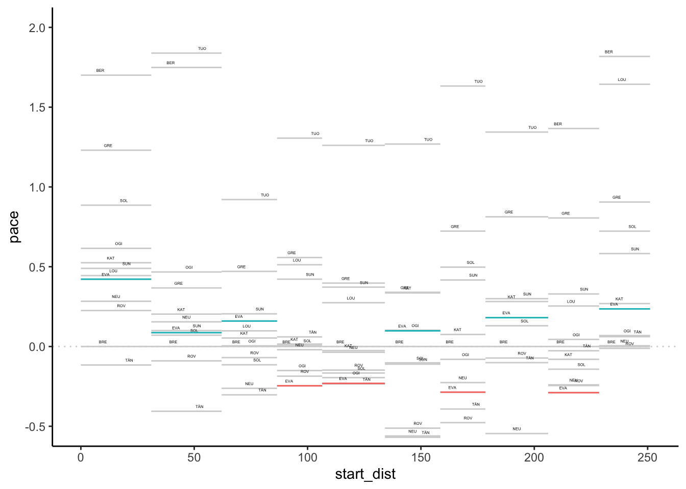
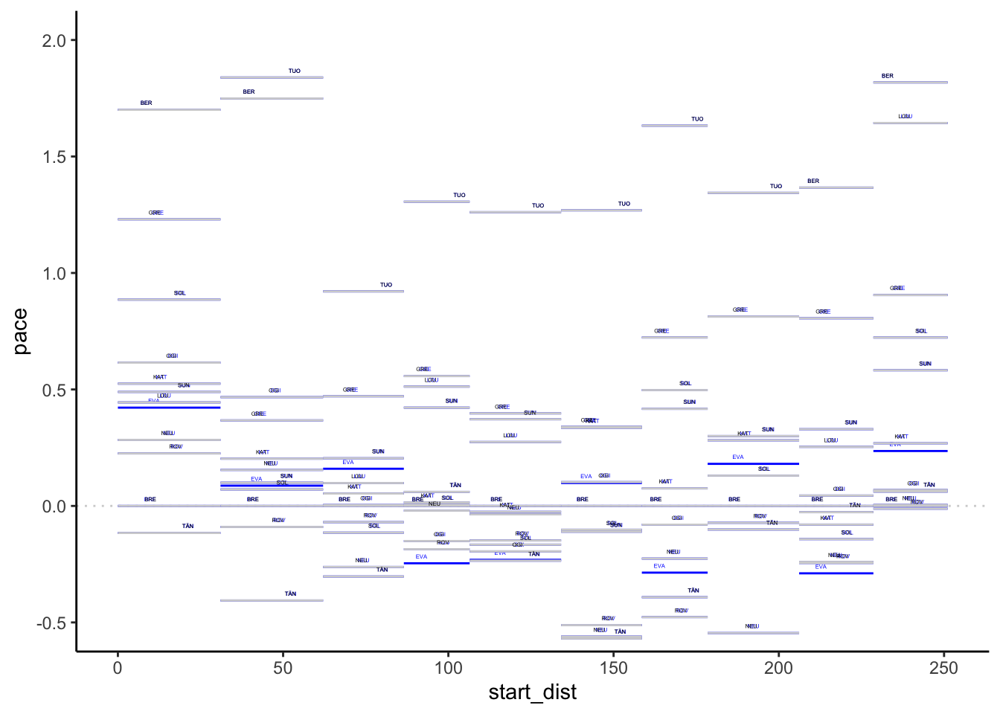
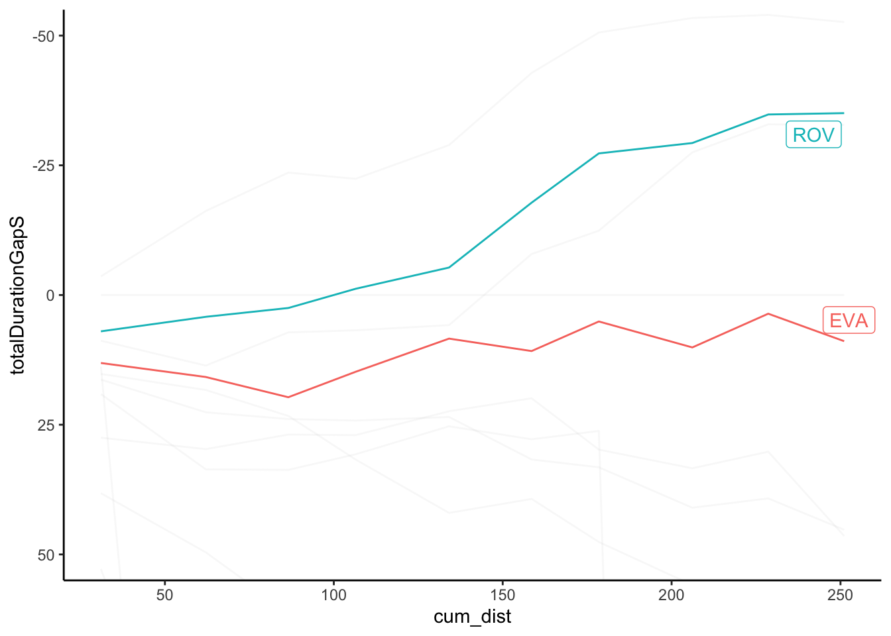

6 Visualising Stage Pace Using Pace Maps
To compare pace, it is useful to look at rebased pace times relative to a particular driver and also indicate the length of stage with which particular pace levels are associated.
We can do this with a chart that presents distance into stage along the horizontal x-axis and relative pace on the y axis, using a line to indicate the pace for each driver relative to a specified driver.
One of the easiest way of plotting charts is to plot from a tidy dataframe, so let’s cast the rebased wide pace dataframe back to a long form and also add in the distance into stage at the start and end of each stage:
library(tidyr)
stage_range = c(start=stage_codes[1],
end=stage_codes[length(stage_codes)])
stages$cum_dist = cumsum(stages$distance)
stages$start_dist = c(0, stages$cum_dist[-length(stages$cum_dist)])
pace_stage = pace_wide_rebased %>%
gather(code, pace,
stage_range['start']:stage_range['end']) %>%
merge(stages[,c('code', 'start_dist', 'cum_dist')],
by='code')
pace_stage %>% head(3)## code code_driver pace start_dist cum_dist
## 1 SS1 BER 1.7004831 0 31.05
## 2 SS1 BRE 0.0000000 0 31.05
## 3 SS1 EVA 0.4219002 0 31.05We can now construct a chart using line segments to represent the pace for each driver on each stage:
library(ggplot2)
g0 = ggplot(pace_stage, aes(group=code_driver)) +
geom_hline(yintercept = 0,
colour='lightgrey', linetype='dotted') +
geom_segment(aes(x=start_dist, xend=cum_dist,
y=pace, yend=pace),
color = 'lightgrey')
g = g0 + geom_text(aes(x=(start_dist+cum_dist)/2,y=pace+0.03,
label=code_driver,group=code_driver),
position = position_dodge(15), size=1) +
coord_cartesian(ylim=c(-0.5,2)) +
theme_classic()
g
We could highlight positive and negative differences in the label colourings:
g0 + geom_text(aes(x=(start_dist+cum_dist)/2,
y=ifelse(pace>0,pace+0.03,pace-0.03),
label=code_driver,group=code_driver,
color=pace>0),
position = position_dodge(15), size=1) +
coord_cartesian(ylim=c(-0.5,2)) +
theme_classic() + theme(legend.position="none")
We can also highlight values for a particular driver:
g + geom_segment(data=pace_stage[pace_stage$code_driver=='EVA',],
aes(x=start_dist, xend=cum_dist,
y=pace, yend=pace, color = pace>0)) +
theme(legend.position="none")
Or abuse the gghiglight package to modify the aesthetics of unselected items:
g + gghighlight::gghighlight(code_driver=='EVA',
unhighlighted_params=list(alpha=0.1)) Alternatively, abuse
Alternatively, abuse gghighlight() again with a negative form of selection to highlight items:
g + gghighlight::gghighlight(code_driver!='EVA',label_key=code_driver,
unhighlighted_params=list(color='blue'))
We could even add a transparency layer bar to highlight the pace difference compared to a particular driver:
g + geom_rect(data=pace_stage[pace_stage$code_driver=='EVA',],
aes(xmin=start_dist, xmax=cum_dist,
ymin = ifelse(pace>0,0,pace),
ymax = ifelse(pace>0,pace,0),
fill = pace>0, alpha=0.7)) +
theme(legend.position="none")
Could we perhaps also extend that a little to allow us to compare more drivers?
pace_map_highlight = function(sub_df, m, n){
# If we don't grab the actual value
# the referenced value is used...
m_ = m
geom_rect(data=sub_df,
aes(xmin= start_dist + (m_-1) * (cum_dist - start_dist)/n,
xmax= start_dist + m_ * (cum_dist - start_dist)/n,
ymin = ifelse(pace>0,0,pace),
ymax = ifelse(pace>0,pace,0),
fill = pace>0, alpha=0.7))
}
pace_map_highlight_many = function(df, g, codes,
idcol='code_driver'){
n = length(codes)
for (m in 1:n){
sub_df = df[df[idcol]==codes[m],]
g = g + pace_map_highlight(sub_df, m, n)
}
g
}Let’s try it with two drivers:
pace_map_highlight_many(pace_stage, g, c('EVA', 'ROV' )) +
theme(legend.position="none")With multiple drivers, it may get difficult to see where the stages are delimited, so we might add separators to delimit them:
g + geom_vline(data = stages, aes(xintercept = cum_dist),
color='lightgrey', linetype='dotted')
To highlight stages further, we could add a “banner” to the chart:
g + geom_rect(data=pace_stage[pace_stage$code_driver==example_driver,],
aes(xmin=0, xmax=max(cum_dist),
ymin = 1.8, ymax = 2.0,
alpha=0), fill = 'black') +
geom_text(data=pace_stage[pace_stage$code_driver==example_driver,],
aes(x=(cum_dist + start_dist)/2, label=code),
y=1.9, color='yellow', size=3) +
geom_segment(data=pace_stage[pace_stage$code_driver==example_driver,],
aes(x=cum_dist, xend=cum_dist,
y=1.8, yend=2.0), color='yellow') +
theme(legend.position="none")
6.0.1 A Pace Map Function
Let’s start to work up a function based on the above sketches that will generate a pace map for us directly from a long format pace dataframe.
pace_map = function(pace_long, limits=c(-0.5,2),
labels=TRUE, drivers=NULL, lines=TRUE,
xstart='start_dist', xend='cum_dist',
pace='pace', typ='bar', pace_label_offset=0.03,
label_dodge=15,
idcol='code_driver'){
# There are downstream dependencies with colnames baked in atm...
pace_long$start_dist = pace_long[[xstart]]
pace_long$cum_dist = pace_long[[xend]]
pace_long$pace = pace_long[[pace]]
g0 = ggplot(pace_long, aes_string(group=idcol, label=idcol)) +
geom_hline(yintercept = 0,
colour='lightgrey', linetype='dotted') +
geom_segment(aes(x=start_dist, xend=cum_dist,
y=pace, yend=pace),
color = 'lightgrey')
if (lines) {
lines_df = data.frame(cum_dist=unique(pace_long$cum_dist))
g0 =g0 + geom_vline(data=lines_df, aes(xintercept = cum_dist),
color='lightgrey', linetype='dotted')
}
if (labels){
g0 = g0 + geom_text(aes(x= (start_dist+cum_dist)/2,
y=pace+pace_label_offset),
position = position_dodge(label_dodge), size=1)
}
if (!is.null(drivers) ){
if (typ=='bar'){
g0 = pace_map_highlight_many(pace_long, g0,
c(drivers), idcol=idcol)
} else if (typ=='highlight')
{
focus = pace_long[pace_long[idcol] %in% c(drivers),]
g0 = g0 + geom_segment(data=focus,
aes(x=start_dist, xend=cum_dist,
y=pace, yend=pace, color = pace>0))
}
}
g0 = g0 + coord_cartesian(ylim=limits)
g0 + theme_classic() + theme(legend.position="none")
}Let’s try it:
pace_map(pace_stage, drivers=c('EVA', 'ROV'))6.1 Off-the-Pace Charts
Another way or reviewing pace is to consider the gap to leader, or rebased gap to a particular driver across the stages, using distance into stage along the x-axis to locate the x-value and gap (measured in seconds) along the y-axis. A moment’s consideration suggests that the gradient (\(\textrm{change_in_gap}/\textrm{change_in_distance}\)) is a measure of pace. The slope of the line thus indicates relative pace between the focal driver and the other drivers.
As with the pace map, if we have the data in a long, tidy form, we can create charts from it quite straightforwardly. So let’s add in the accumulated distance into stage and accumulated stage time for each time:
off_the_pace = multi_stage_pace %>%
merge(stages[,c('stageId', 'cum_dist')],
by='stageId') %>%
arrange(number) %>%
group_by(code_driver) %>%
mutate(totalDurationS = cumsum(elapsedDurationS))
off_the_pace %>% head(3)## # A tibble: 3 x 8
## # Groups: code_driver [3]
## stageId number code_driver elapsedDurationS pace code cum_dist
## <int> <int> <chr> <dbl> <dbl> <chr> <dbl>
## 1 1747 1 TÄN 958. 30.8 SS1 31.0
## 2 1747 1 BRE 961. 31.0 SS1 31.0
## 3 1747 1 ROV 968. 31.2 SS1 31.0
## # … with 1 more variable: totalDurationS <dbl>Now we can create a basic off-the pace chart:
ggplot(off_the_pace, aes(x=cum_dist, y=totalDurationS,
color=code_driver)) + geom_line()
As with the pace map, the chart is often most informative if we rebase it relative to a particular driver.
Let’s create a wide dataframe to simplify the rebasing process:
off_the_pace_wide = get_multi_stage_generic_wide(off_the_pace,
stage_codes, 'totalDurationS',
group_key=c('code_driver'),
spread_key='code')
off_the_pace_wide %>% head(3)## code_driver SS1 SS2 SS3 SS4 SS5 SS6 SS7 SS8 SS9
## 1 BER 1014.2 2034.0 3468.5 4615.1 5965.2 7402.5 8551.3 9915.3 10560.0
## 2 BRE 961.4 1926.9 2768.8 3320.3 4076.9 4928.1 5486.4 6265.5 6879.5
## 3 EVA 974.5 1942.7 2788.5 3335.1 4085.3 4938.9 5491.5 6275.6 6883.1
## SS10
## 1 11203.580
## 2 7482.231
## 3 7491.128Now we can rebase:
off_the_pace_wide_rebased = rebase(off_the_pace_wide,
example_driver, stage_codes,
id_col='code_driver')
off_the_pace_wide_rebased %>% head(3)## code_driver SS1 SS2 SS3 SS4 SS5 SS6 SS7 SS8 SS9
## 1 BER 52.8 107.1 699.7 1294.8 1888.3 2474.4 3064.9 3649.8 3680.5
## 2 BRE 0.0 0.0 0.0 0.0 0.0 0.0 0.0 0.0 0.0
## 3 EVA 13.1 15.8 19.7 14.8 8.4 10.8 5.1 10.1 3.6
## SS10
## 1 3721.349
## 2 0.000
## 3 8.897And cast back to the long, tidy form:
off_the_pace_long = off_the_pace_wide_rebased %>%
gather(code, totalDurationGapS,
stage_range['start']:stage_range['end']) %>%
merge(stages[,c('code', 'cum_dist')],
by='code')
off_the_pace_long %>% head(3)## code code_driver totalDurationGapS cum_dist
## 1 SS1 BER 52.8 31.05
## 2 SS1 BRE 0.0 31.05
## 3 SS1 EVA 13.1 31.05And now we can plot the simple rebased off-the-pace chart:
g_otp = ggplot(off_the_pace_long, aes(x=cum_dist,
y=totalDurationGapS,
color=code_driver)) +
geom_line() +
# Retain the points outside the limits
# by using coord_cartesian()
# We can also flip the coordinate axis
coord_cartesian(ylim=c(100, -100)) + theme_classic()
g_otp
We might also want to zero the origin, for example by adding a row for each driver with a zeroed distance and gap.
Let’s create some dummy data to represent that:
zero_df = data.frame(code_driver=unique(off_the_pace_long$code_driver))
zero_df$cum_dist = 0
zero_df$totalDurationGapS = 0
zero_df$code = 'SS0'We can then bind that data into our long form splits data and view the result:
g_otp = bind_rows(off_the_pace_long, zero_df) %>%
ggplot(aes(x=cum_dist,
y=totalDurationGapS,
color=code_driver)) +
geom_line() +
# Retain the points outside the limits
# by using coord_cartesian()
# We can also flip the coordinate axis
coord_cartesian(ylim=c(100, -100)) + theme_classic()
g_otpTrivially, we might try to add labels at the end of each line:
off_the_pace_end = off_the_pace_long %>% filter(cum_dist == max(cum_dist))
g_otp + geom_text(data = off_the_pace_end,
aes(x = cum_dist+ 10, y = totalDurationGapS,
label = code_driver, color = code_driver)) +
theme(legend.position="none")
However, there are various other packages that provide alternative ways of doing this, including directlabels and ggrepel.
For example, using directlabels:
library(directlabels)
g_otp +
geom_dl(aes(label = code_driver, x=cum_dist+2),
# cex is text label size
method = list('last.bumpup', cex = 0.5)) +
theme(legend.position="none")
And using ggrepel, which also has the advantage of adding labels for drivers who curves are really of the pace, albeit not in an obviously natural order:
g_otp + ggrepel::geom_text_repel(data = off_the_pace_end,
aes(label = code_driver),
size = 3) +
theme(legend.position="none")
The gghighlight package is also useful in highlighting traces, as well as usefully automatically labeling highlighted lines:
g_otp +
gghighlight::gghighlight(code_driver %in% c('EVA','ROV'),
unhighlighted_params=list(alpha=0.1)) +
theme(legend.position="none")
Again, let’s routinise the process of chart production with the beginnings of a function to generate the off-the-pace chart directly from an appropriate form dataframe:
off_the_pace_chart = function(pace_long, highlight=NULL,
label_typ='dl',
dist='cum_dist', t='totalDurationGapS',
code='code_driver', ylim=NULL){
g_otp = ggplot(pace_long, aes_string(x=dist, y=t,
color=code)) +
geom_line() +
# Retain the points outside the limits
# by using coord_cartesian()
# We can also flip the coordinate axis
coord_cartesian(ylim=ylim) + theme_classic()
off_the_pace_end = pace_long[pace_long[dist] == max(pace_long[dist]),]
if (!is.null(highlight))
g_otp = g_otp + gghighlight::gghighlight(code_driver %in% c(highlight),
unhighlighted_params=list(alpha=0.1))
else if (label_typ=='dl')
g_otp = g_otp + geom_dl(aes_string(label = code, x=dist),
# cex is text label size
method = list('last.bumpup', cex = 0.5))
else
g_otp = g_otp + ggrepel::geom_text_repel(data = off_the_pace_end,
aes_string(label = code),
size = 3)
g_otp + theme(legend.position="none")
}Let’s quickly test it:
off_the_pace_chart(off_the_pace_long)And with highlighting:
off_the_pace_chart(off_the_pace_long, highlight=c('EVA', 'ROV'))
6.2 Comparing Pace Across Stages
One way of characterising stages is based on pace As a quick guide to possible pace variations over the stages of a rally, we might review the average pace. For example, here’s a look at pace over the course of the rally using a box plot to summarise the (non-outlier) pace values for each stage (we should probably use an ordered categorical stageId basis for the x-axis):
ggplot(off_the_pace[off_the_pace$pace<40,],
aes(x=cum_dist, y=pace)) +
geom_boxplot(aes(group=cum_dist))